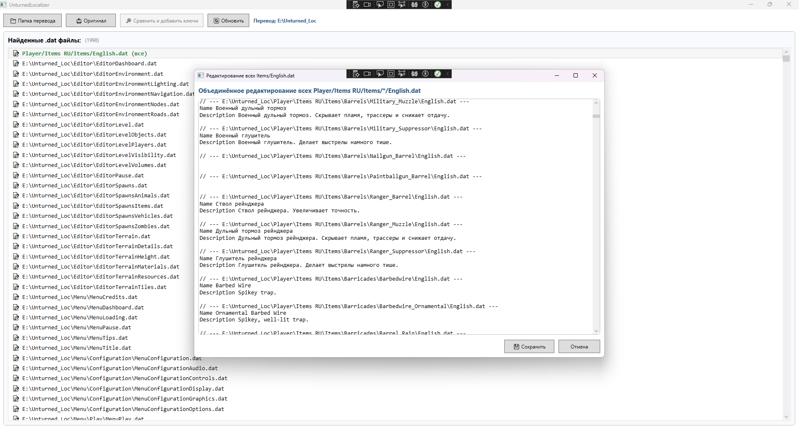

Новости разработки
03.05.2025
Вышел тестовый выпуск RUnturned 0.93 для Unturned 3.25.4.0
Основные изменения и улучшения:
- Переведены все диалоги с NPC
- Переведены все квесты с карты Russia
- Добавлен установщик для автоустановки перевода NPC в нужную папку
- Переведена часть предметов
03.05.2025
Перевод NPC, квестов и диалогов практически закончен
В данный момент завершён полностью перевод имён NPC, диалогов и квестов. В процессе диалоги с NPC-торговцами и параллельно ведётся перевеод названий и описаний предметов.

02.05.2025
Вышел RUnturned 0.92 в мастерской стим для Unturned 3.25.4.0
Основные изменения и улучшения:
- Переведено всё, что связано с меню "Играть" и меню "Выжившие"
Изменения с версий 0.91 и 0.90:
UPDATE v0.91:
- Переведён редактор карт
- Мелкие исправления ошибок
UPDATE v0.9:
- Восстановлены все отсутствующие ключи
- Начат постепенный перевод отсутствующих ключей
Как установить русификатор
Установка русификатора RUnturned проста и займет всего несколько минут. Следуйте инструкциям ниже:
1
Скачайте архив с русификатором
Загрузите последнюю версию русификатора RUnturned с нашего сайта, используя кнопку "Скачать последнюю версию" выше или на странице релизов GitHub.
2
Распакуйте
Распакуйте архив в любое место
3
Запустите RUnturned.exe
Запустите RUnturned.exe и укажите в нём папку с установленной игрой. Инсталлятор сам установит все необходимые файлы.
4
Запустите игру
Запустите Unturned через Steam. Весь интерфейс игры должен быть на русском языке.
Обратите внимание
Рекомендуется создать резервную копию оригинальных файлов игры перед установкой русификатора. Так вы сможете вернуться к английской версии в случае проблем.
Если у вас возникли трудности с установкой, напишите мне (fen4) на форуме или в Telegram.
О проекте RUnturned
RUnturned — это некоммерческий проект по созданию качественного русификатора для популярной игры Unturned. Наша цель — сделать игру более доступной для русскоязычных игроков с полным и точным переводом всех элементов игры.
История проекта
Проект был начат в январе 2018 года игроком под ником fen4. В то время существовал один неоконченный и крайне неправильный перевод и было принято решение создать свой - так и родился RUnturned. В конце 2019 года для русификатора перестали выходить обновления. Теперь, в 2025 году снова ведётся работа над переводом.
Особенности русификатора:
- Полный перевод интерфейса игры
- Перевод всех предметов и их описаний
- Перевод диалогов и квестов
- Регулярные обновления
- Поддержка актуальных версий игры
Связаться с автором
Если у вас есть вопросы, предложения или вы хотите помочь с проектом, свяжитесь со мной через:
Поддержать проект
Разработка и поддержка русификатора требует времени и усилий. Если вам нравится наша работа и вы хотите поддержать проект финансово, вы можете сделать это по ссылке ниже:
Поддержать проект
Любая помощь очень ценна для нас и позволит продолжать работу над улучшением русификатора.